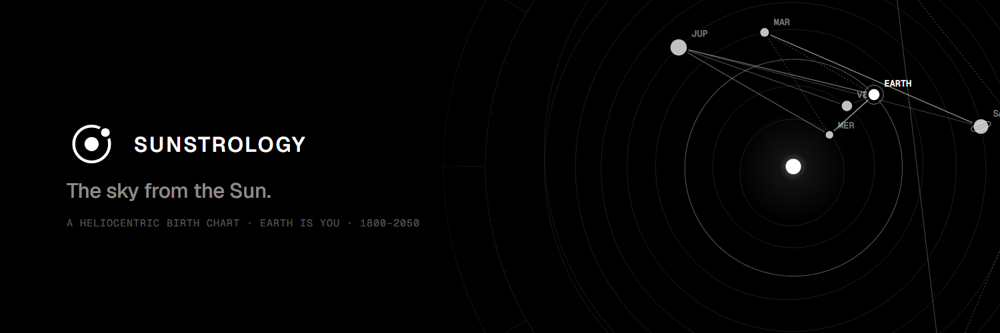
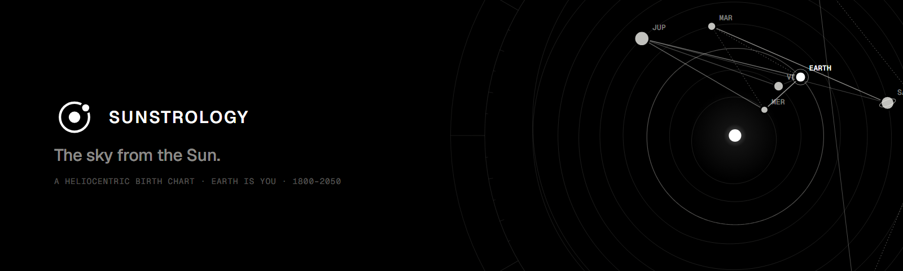
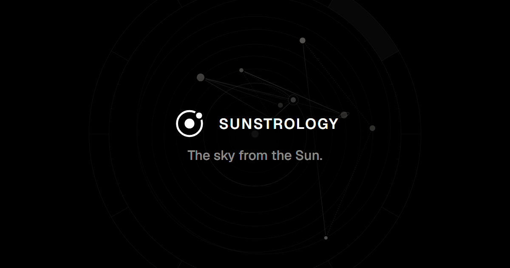
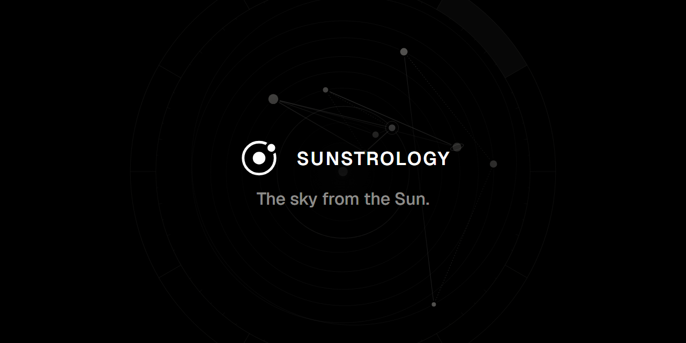
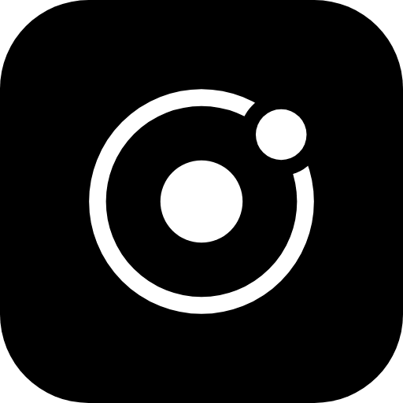
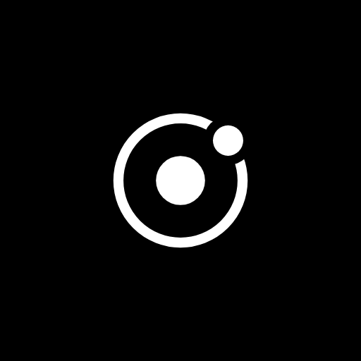
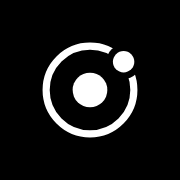
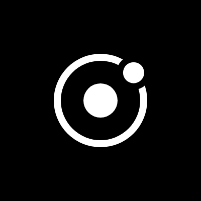

The mark, the banners, the loops
Built from 01, “Earth on the ring”: the Sun in the middle, you as the one dot going round it. One ink, white on black, the same rules as stems.fm and GODMIX. The banners show the real sky on 4 November 2026, the day v2 was made.
Loops MP4 1080 · GIF 420–540
Eight years: Venus goes round 13 times while Earth goes round 8, so a line joining them every twelve days traces a five-petalled figure, the real rhythm of the two planets. Mercury and Mars are rounded to whole turns so the loop closes.
Banners PNG + SVG




Lockup
Mark

Icons



